Un ordenador dentro de otro: VMware, VirtualBox e Hyper-V.
←→ para moverte ·P pantalla completa rueda del ratón o clic en el índice
Unidad 3
Contenidos de la unidad
Siete apartados de teoría, cuatro prácticas, el test masivo y el examen. Primero, qué es una máquina virtual y cómo funciona; después, crearla, configurarla, conectarla a la red y medir cuánto rinde. Pulsa en cualquiera para ir directamente a él.
Qué es una máquina virtual, anfitrión e invitado, y para qué sirve.
Criterio b
Valorar ventajas e inconvenientes
Aislamiento, instantáneas y ahorro frente a rendimiento, recursos y licencias.
Criterio c
Instalar software libre y propietario
VMware Workstation Pro (propietario y gratuito) y VirtualBox (libre).
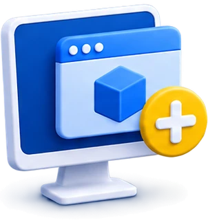
Criterio d
Crear máquinas para sistemas libres y propietarios
Una para Ubuntu, otra para Windows 11 y una ligera en VirtualBox.
Criterio e
Configurar máquinas virtuales
Memoria, núcleos, discos, instantáneas, clones y modos de red.
Criterio f
Relacionar la máquina con el anfitrión
Sus archivos, su proceso, sus adaptadores de red y lo que comparte con tu Windows.
Criterio g
Hacer pruebas de rendimiento
Medir la misma prueba fuera y dentro, y explicar la diferencia con números.
Herramienta del curso
VMware Workstation Pro
Con él se instalan Ubuntu (UT4) y Windows 11 (UT8). VirtualBox se usa en esta unidad.
Concepto clave
Máquina virtual
Programa que imita un ordenador completo (procesador, memoria, disco, red, pantalla) en el que se instala un sistema operativo y se usa como si fuera un equipo independiente.
Recibe una parte de los recursos del equipo real y los ve como propios. El sistema que se instala dentro funciona como en un PC de verdad.
Virtual. 3. adj. Fís. Que tiene existencia aparente y no real. Real Academia Española, Diccionario de la lengua española, entrada virtual.
Virtualización
Máquina real y máquina virtual
Máquina real
El ordenador físico: se toca, se enchufa y se puede abrir.
●Hardware de verdad: placa, procesador, memoria y disco.
●El sistema operativo arranca directamente sobre él.
●Si se estropea el sistema, hay que reinstalar o recuperar.
Máquina virtual
Un ordenador imitado por un programa dentro del real.
●Hardware simulado, con una parte de los recursos del real.
●Para el equipo real es un proceso y unos archivos: se copia, se mueve y se borra.
●Si se estropea, se vuelve atrás en segundos con una instantánea.
Lo que no cambia: dentro de una máquina virtual se instala, se configura y se rompe un sistema operativo exactamente igual que en un PC de verdad.
Virtualización
Anfitrión e invitado
●Sistema anfitrión (host): el instalado en el equipo real. Sobre él se instala el programa de virtualización.
●Sistema invitado o huésped (guest): el instalado dentro de una máquina virtual.
●Un anfitrión puede tener varios invitados, encendidos a la vez si le llegan la memoria y el procesador.
●En el aula: Windows 11 es el anfitrión; Ubuntu y Windows 11 dentro de VMware son los invitados.
Figura 3.1. Capas de un equipo con máquinas virtuales. Elaboración propia.
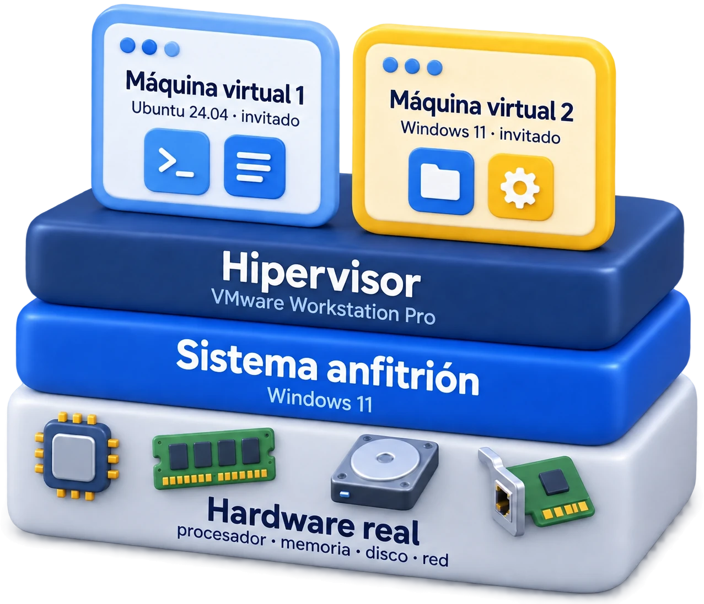
Virtualización
Para qué sirve una máquina virtual
Uso
Qué significa
Ejemplo
Probar sistemas operativos
Instalar un sistema, o varias versiones, sin tocar el del equipo ni particionar el disco.
Probar Ubuntu antes de instalarlo de verdad.
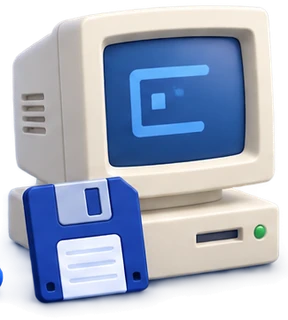
Usar programas de otro sistema
Usar un programa que no funciona en tu sistema: uno antiguo o de otro sistema operativo.
Un programa de gestión que solo va en Windows XP.
Probar programas que no son de fiar
Lo que haga se queda dentro; luego se vuelve a como estaba.
Analizar un adjunto sospechoso.
Aprender sin miedo a romper
Instalar, configurar y estropear sin riesgo para el equipo real.
Este curso entero: de la UT4 a la UT10.
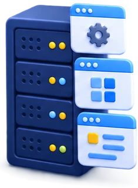
Varios servidores en un equipo
Un servidor físico potente con muchas máquinas virtuales, cada una con su servicio.
Correo, web y base de datos de una empresa.
La nube
El servidor que se alquila en internet suele ser una máquina virtual de un centro de datos.
Un servidor en Amazon Web Services o Azure.
Tabla 3.1. Usos de las máquinas virtuales. Las tres primeras son las clásicas; las dos últimas explican por qué hoy casi todos los servidores son virtuales.
Virtualización
Ventajas e inconvenientes
Ventajas
✓Aislamiento: lo que pase dentro no afecta al anfitrión.
✓Instantáneas: volver atrás en segundos.
✓Varios sistemas a la vez sin particionar el disco.
✓Portabilidad: se lleva a otro equipo copiando archivos.
✓Se aprovecha mejor el hardware, que casi siempre está ocioso.
✓Ahorro: menos equipos físicos, menos energía y espacio.
Inconvenientes
✗Rinde menos que el equipo real, sobre todo el disco y los gráficos.
✗Le quita memoria, procesador y disco al anfitrión.
✗Juegos y 3D, limitados; algún dispositivo no funciona dentro.
✗Si cae el anfitrión, caen todas.
✗Cada sistema invitado necesita su licencia.
✗Ocupan mucho disco: decenas de GB cada una.
Comprueba lo aprendido
Una máquina virtual es…
Selecciona una opción.
Concepto clave
Hipervisor
Software que crea y ejecuta las máquinas virtuales y reparte entre ellas el hardware real: memoria, turnos de procesador, disco y red.
También se llama monitor de máquinas virtuales (VMM). VMware, VirtualBox e Hyper-V son hipervisores: el «software de virtualización».
El hipervisor
De los mainframes a la nube
Figura 3.2. Línea de tiempo de la virtualización. Elaboración propia.
El hipervisor
Hipervisor de tipo 1 y de tipo 2
Tipo 1
Nativo o bare metal: directamente sobre el hardware.
●No hay sistema anfitrión debajo: el hipervisor arranca primero.
●Más rápido; para servidores, centros de datos y la nube.
●Se administra desde otro equipo: por la red o con una consola web.
●VMware ESXi, Hyper-V, Proxmox VE (KVM), Xen.
Máquina virtual
Máquina virtual
Hipervisor
Hardware
Tipo 2
Alojado: un programa sobre un sistema anfitrión.
●Se instala y se abre como cualquier aplicación.
●Cómodo para el puesto de trabajo; algo más lento.
●Si se cierra el programa o se apaga el anfitrión, se paran las máquinas.
Figura 3.3. Hipervisor de tipo 1 y de tipo 2. En este curso usamos uno de tipo 2. Hyper-V se activa desde Windows, pero se coloca por debajo de él: es de tipo 1. Elaboración propia.
El hipervisor
La ayuda del procesador
Los procesadores actuales traen instrucciones para que el hipervisor trabaje rápido y seguro: es la virtualización asistida por hardware.
●Intel VT-x (desde 2005) y AMD-V, o SVM (desde 2006).
●Sin ella no arranca ninguna máquina virtual de 64 bits.
●En algunos equipos viene desactivada: se activa en la UEFI (Intel Virtualization Technology o SVM Mode), en el mismo menú en el que se cambia el orden de arranque (UT2).
Si pone Deshabilitado, hay que activarla en la UEFI: sin ella, ni VMware ni VirtualBox arrancan la máquina.
Maqueta de elaboración propia de la pestaña Rendimiento del Administrador de tareas (Ctrl + Mayús + Esc).
Pregunta a la clase
¿Tiene tu ordenador la virtualización activada?
Míralo ahora en tu PC. ¿Y tiene ya Windows su propio hipervisor en marcha?
Dónde mirarlo
1Administrador de tareas (Ctrl + Mayús + Esc) › Rendimiento › CPU › Virtualización: Habilitado o Deshabilitado.
2msinfo32 › al final del Resumen del sistema: si pone «Se detectó un hipervisor», Windows ya tiene uno en marcha (se explica en la siguiente).
3En la misma lista, Seguridad basada en virtualización: En ejecución o No habilitada.
Si alguien tiene Deshabilitado, se activa en la UEFI antes de la práctica 3.4.
El hipervisor · relación con el anfitrión
Cuando Windows ya lleva un hipervisor
Windows 11 puede arrancar su propio hipervisor, Hyper-V, por debajo de él mismo. Lo activan:
●Hyper-V, WSL 2 (Linux dentro de Windows), el Espacio aislado de Windows y Docker Desktop.
●La Integridad de memoria (Seguridad de Windows › Seguridad del dispositivo › Aislamiento del núcleo), activada de fábrica en muchos equipos nuevos.
Entonces VMware o VirtualBox tienen que funcionar a través de Hyper-V: van más lentos y pueden aparecer el ratón a saltos y las pantallas negras.
Sin hipervisor de Windows
Máquina virtual
VMware o VirtualBox
Windows 11
Hardware
Con Hyper-V por debajo
Máquina virtual
VMware o VirtualBox
Windows 11
Hyper-V
Hardware
La tortuga verde. VirtualBox la enseña en la barra de estado cuando va a través de Hyper-V. VMware lo sufre menos.
Cómo verlo:msinfo32 › Seguridad basada en virtualización. Desactivarla baja la seguridad: no se toca sin permiso.
Figura 3.4. El hipervisor de Windows por debajo del sistema. Elaboración propia.
El hipervisor
Máquina virtual y contenedor
Máquina virtual
Un ordenador entero imitado.
●Sistema operativo completo, con su propio núcleo.
●Arranca en segundos o minutos; ocupa gigas.
●Puede llevar otro sistema distinto del anfitrión.
Contenedor
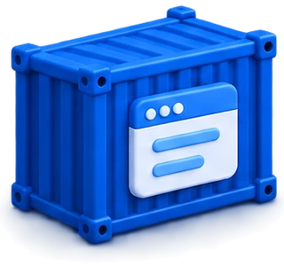
Una aplicación aislada con lo que necesita (Docker).
●Comparte el núcleo del anfitrión: no hay otro sistema entero.
●Arranca en milisegundos; ocupa megas.
●Solo ejecuta programas del mismo sistema que el anfitrión (Linux sobre Linux).
No compiten: en la nube es normal tener contenedores dentro de máquinas virtuales. En este módulo trabajamos con máquinas virtuales.
Pregunta a la clase
¿Un emulador de consola es una máquina virtual?
Un emulador de Game Boy en el PC también hace creer a un programa que está en otra máquina. ¿Es lo mismo que VMware?
Se parecen, pero no son lo mismo
Emular Imitar otro procesador distinto traduciendo cada instrucción: la Game Boy, la PS2 o un móvil Android en el PC. Funciona, pero lento.
Virtualizar Ejecutar las instrucciones directamente en el procesador real, que es del mismo tipo, con la ayuda de VT-x o AMD-V. Casi a velocidad real.
Un emulador es una máquina virtual en sentido amplio, pero en este módulo virtualizar es lo segundo: mismo procesador, otro sistema operativo.
Comprueba lo aprendido
¿Qué es VirtualBox?
Selecciona una opción.
Software de virtualización
Los tres más usados en el PC
VMware Workstation Pro
Oracle VirtualBox
Hyper-V
Empresa
Broadcom (compró VMware en 2023)
Oracle
Microsoft
Licencia
Propietario y gratuito para cualquier uso desde noviembre de 2024, sin clave
Libre (GPLv3); el Extension Pack, aparte, es propietario
Incluido en Windows 11 Pro, Education y Enterprise; no en Home
Anfitriones
Windows y Linux (en Mac, VMware Fusion, también gratis)
Windows, Linux y macOS, también con chip de Apple
Solo Windows
Tipo
Tipo 2
Tipo 2
Tipo 1, aunque se active desde Windows
Integración
VMware Tools (open-vm-tools en Linux)
Guest Additions
Servicios de integración
Versión en 2026
26H1. Workstation Player ya no existe
7.2
Viene con Windows 11 e incluye «Creación rápida»
Tabla 3.2. Los tres programas de virtualización más usados en el PC. En este curso: VMware Workstation Pro como herramienta de trabajo y VirtualBox en esta unidad. Datos de las páginas oficiales de cada fabricante, octubre de 2026.
Software de virtualización · repaso de la UT1
Gratis no es lo mismo que libre
Libre: VirtualBox
Licencia GPLv3, como Linux.
●El código está publicado: se puede estudiar, modificar y redistribuir.
●Además es gratis, pero eso no es lo que lo hace libre.
●Su Extension Pack es propietario: gratis para uso personal y educativo, de pago en empresas.
Propietario: VMware
Contrato de licencia de Broadcom (EULA).
●Se usa sin pagar, también en empresas, pero el código no está publicado.
●No se puede modificar ni redistribuir; la empresa puede cambiar las condiciones.
●Hyper-V es otro caso: va incluido en la licencia de Windows.
Lo que distingue el software libre son las libertades de la licencia (usar, estudiar, modificar y compartir), no el precio. Se vio en la UT1.
Software de virtualización
Otros hipervisores que te vas a encontrar
Nombre
Tipo
Licencia
Dónde se usa
QEMU y KVM
1 (KVM)
Libre
Linux y la nube; con virt-manager o con Cajas de GNOME como interfaz
Proxmox VE
1
Libre
Servidores de pymes y centros educativos, sobre KVM
VMware ESXi (vSphere)
1
Propietario
Centros de datos de empresas
Xen y XCP-ng
1
Libre
Servidores; fue la base de la primera nube de Amazon
Parallels Desktop
2
Propietario de pago
Mac
UTM
2
Libre
Mac; por dentro usa QEMU
Espacio aislado de Windows
1 (es Hyper-V)
Incluido en Windows
Una máquina virtual de usar y tirar: al cerrarla se borra todo
Tabla 3.3. Otros hipervisores. Basta con saber que existen y para qué se usan.
Software de virtualización · relación con el anfitrión
Herramientas de integración
Controladores y servicios que se instalan dentro del invitado para que se entienda con el anfitrión. En VMware se llaman VMware Tools (en Linux, open-vm-tools, que Ubuntu ya trae); en VirtualBox, Guest Additions; en Hyper-V, servicios de integración.
El ratón entra y sale solo sin quedarse atrapado en la ventana.
La pantalla se ajusta a la ventana: nada de 800 × 600.
Portapapeles compartido copiar fuera y pegar dentro.
Arrastrar y soltar archivos entre los dos sistemas.
Carpetas compartidas una carpeta del anfitrión vista dentro.
Hora sincronizada y controladores de vídeo y red más rápidos.
Sin ellas, la máquina funciona, pero el ratón se queda atrapado y la pantalla no se adapta. No confundir con el Extension Pack de VirtualBox: ese va en el anfitrión.
Software de virtualización · propietario
Instalar VMware Workstation Pro
1El instalador: oficialmente, del portal de soporte de Broadcom (pide cuenta). En clase, de la carpeta compartida del profesor.
2Ejecutarlo como administrador y aceptar el contrato de licencia.
3Opciones: controlador de teclado mejorado (Enhanced Keyboard Driver), buscar actualizaciones y programa de mejora (se puede desmarcar), accesos directos.
4Si Windows tiene Hyper-V en marcha, el instalador lo avisa y prepara lo necesario para funcionar encima.
5Abrirlo: ya no pide clave. Los menús están en inglés.
VMware Workstation Pro Setup✕
Custom Setup
Select the destination folder and optional features.
C:\Program Files\VMware\VMware Workstation\
BackNext
Maqueta de elaboración propia de un paso del instalador. Los textos exactos dependen de la versión.
Software de virtualización · libre
Instalar VirtualBox
1Descargar de virtualbox.org › Downloads › Windows hosts (en clase, de la carpeta compartida).
2Si lo pide, instalar antes el redistribuible de Microsoft Visual C++, un paquete de Microsoft que necesitan muchos programas.
3Aviso de red: al instalar los adaptadores virtuales, la conexión se corta unos segundos. Es normal.
4El aviso de dependencias de Python se puede ignorar: solo sirve para programar VirtualBox.
5Extension Pack de la misma versión: doble clic y aceptar su licencia.
Oracle VirtualBox 7.2 Instalación✕
!
Interfaces de red
Instalar las características de red de Oracle VirtualBox restablecerá la conexión de red y la desconectará temporalmente. ¿Continuar con la instalación?
SíNo
Maqueta de elaboración propia del aviso de red del instalador. VirtualBox sí tiene la interfaz en español.
Ejercicio interactivo
¿Quién es el anfitrión?
Lee el caso y pulsa los selectores: el sistema anfitrión, cuántos invitados hay, el tipo de hipervisor y la licencia del programa.
Junta lo de las tres primeras secciones: anfitrión e invitado (3.1), tipos de hipervisor (3.2) y licencias de cada programa (3.3). Pista y Resolver ponen la racha a cero.
Comprueba lo aprendido
¿Cuál de estos programas es software libre?
Selecciona una opción.
Práctica
Instala el software de virtualización
Individual, en clase, en una sesión. Todo sale de la carpeta compartida del profesor: nada de webs de descargas.
1.Comprueba que la virtualización está habilitada y si Windows tiene ya su hipervisor en marcha (Administrador de tareas y msinfo32).
2.Instala VMware Workstation Pro.
3.Instala VirtualBox y su Extension Pack de la misma versión.
4.Crea tu carpeta de máquinas en el disco del aula: C:\VM\apellido-nombre.
5.Rellena la ficha con los datos de tu equipo.
La ficha
● Versión y licencia de cada programa (libre, propietario gratuito).
● RAM, hilos del procesador y disco libre de tu equipo.
● Virtualización habilitada; hipervisor de Windows en marcha o no.
● Adaptadores de red nuevos que aparecen en ipconfig.
Entrega
La ficha, en clase
Se corrige
En tu pantalla
Cubre
Criterios c y f del RA5
Cuenta
Como práctica, dentro del 40 %
La máquina por dentro
El hardware virtual
Componente
Qué se configura
Ojo
Procesadores
Cuántos núcleos virtuales ve la máquina.
Como mucho, la mitad de los hilos reales.
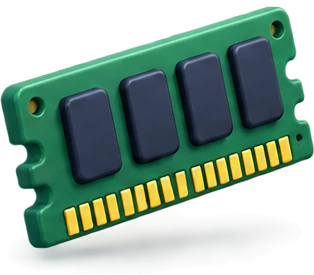
Memoria
La RAM que ve la máquina, en MB o GB.
Se le quita al anfitrión mientras está encendida.
Disco duro
Un archivo del anfitrión que hace de disco: tamaño, tipo y formato.
Dinámico o fijo: lo vemos en la siguiente.
CD/DVD
Una imagen ISO como si fuera un disco metido en el lector.
Así se instala el sistema: arranca de la ISO.
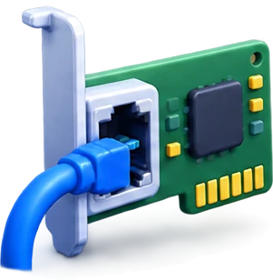
Adaptador de red
Una tarjeta de red virtual con su MAC y su modo.
NAT, puente, solo anfitrión… (3.8).
Pantalla, USB, sonido
Memoria de vídeo, aceleración 3D, controlador USB, tarjeta de sonido.
La aceleración 3D es la que más falla.
Firmware y seguridad
BIOS o UEFI, arranque seguro y TPM virtual (UT2).
Windows 11 exige UEFI, arranque seguro y TPM 2.0.
Tabla 3.4. El hardware de una máquina virtual. La memoria y los núcleos solo se cambian con la máquina apagada; un programa se instala con ella encendida, como en un PC.
La máquina por dentro · VirtualBox
El hardware virtual en VirtualBox
1Detalles: todo el hardware de la máquina de un vistazo. Memoria, orden de arranque, el disco .vdi, la ISO en el lector y la red.
2Configuración › Sistema: la memoria base, el orden de arranque, el TPM y EFI. Solo con la máquina apagada.
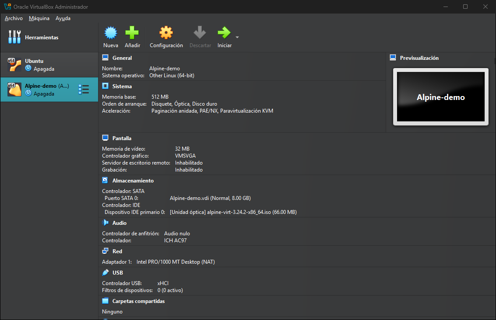
Oracle VirtualBox 7.1 (virtualbox.org) en Windows 11 Pro. Captura: elaboración propia.
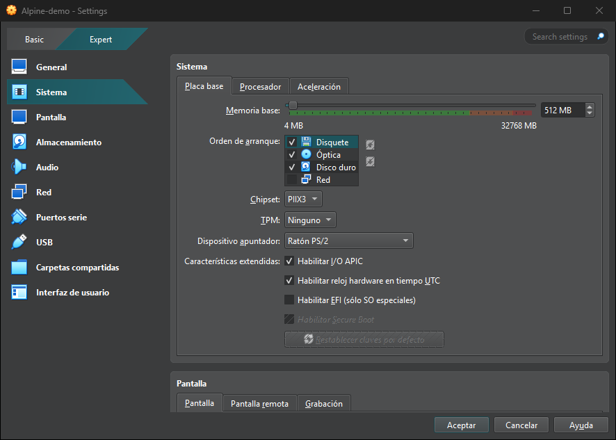
Oracle VirtualBox 7.1 (virtualbox.org) en Windows 11 Pro. Captura: elaboración propia.
La máquina por dentro
Discos virtuales
Formato
Programa
VMDK
VMware (VirtualBox también lo abre)
VDI
VirtualBox: su formato nativo
VHD y VHDX
Hyper-V
QCOW2
QEMU y KVM
Dividir en varios archivos (VMware): el disco se guarda en trozos (-s001.vmdk, -s002.vmdk…), más fáciles de copiar y mover. Antes servía también para no pasar de los 4 GiB de FAT32 (UT2).
Tabla 3.5. Formatos de disco virtual. El disco se puede ampliar después, con la máquina apagada.
Dinámico (thin)
Se reserva el tamaño máximo, pero el archivo ocupa solo lo escrito y va creciendo. Un disco de 64 GB con Windows recién instalado ocupa unos 20 GB.
Fijo (thick)
Ocupa todo su tamaño desde el principio. Algo más rápido, pero tarda en crearse y gasta el disco del anfitrión.
En el aula, siempre dinámico: son veinte alumnos con varias máquinas en el mismo SSD.
La máquina por dentro · relación con el anfitrión
Una máquina virtual es una carpeta de archivos
VMware
.vmx configuración (texto)
.vmdk disco
.nvram firmware
.vmsd .vmsn instantáneas
.vmem memoria
.log registro
VirtualBox
.vbox configuración (XML)
.vdi disco
Snapshots instantáneas
Logs registros
De cualquiera
.iso imagen de instalación
.ova .ovf máquina exportada
Tabla 3.6. Archivos de una máquina virtual. Copiar la carpeta entera, con la máquina apagada, es copiar la máquina.
Maqueta de elaboración propia de la carpeta de una máquina de VMware con el disco dividido. Los tamaños son de ejemplo.
Ejercicio interactivo
¿Qué es este archivo?
Mira el nombre y la extensión, y elige qué guarda y de qué programa es el formato. Los formatos abiertos valen para cualquiera.
Pista y Resolver ponen la racha a cero.
La máquina por dentro · relación con el anfitrión
Cuánto darle a cada máquina
La memoria que se asigna se le quita al anfitrión mientras la máquina está encendida, y con dos máquinas a la vez se suma. Las reglas del módulo:
1Al anfitrión con Windows 11 se le dejan al menos 4 GB.
2A cada máquina, como mucho la mitad de los hilos del procesador (los «procesadores lógicos» del Administrador de tareas).
3Disco dinámico: ocupa solo lo que se escribe.
Ejemplo 1 · equipo de 8 GB y 8 hilos
● Para máquinas: 8 − 4 = 4 GB. Núcleos por máquina: 8 / 2 = 4 como mucho.
● Ubuntu con 4 GB y 2 núcleos: sí.
● Ubuntu (4 GB) y Windows 11 (4 GB) a la vez: 8 − 8 = 0 GB para el anfitrión: no. Por turnos.
Ejemplo 2 · equipo de 16 GB y 12 hilos
● Para máquinas: 16 − 4 = 12 GB. Núcleos: 12 / 2 = 6 como mucho.
● Ubuntu 4 GB + Windows 11 4 GB + dos Alpine de 1 GB = 10 GB: quedan 6 GB al anfitrión: sí. (Alpine: un Linux mínimo, sin escritorio, para las prácticas.)
La máquina por dentro
Requisitos de los sistemas que vamos a instalar
Ubuntu 24.04 LTS Desktop
Windows 11
En el aula
Procesador
2 núcleos a 2 GHz
2 núcleos a 1 GHz, de 64 bits
2 núcleos
Memoria
4 GB
4 GB
4 GB, una máquina grande encendida cada vez
Disco
25 GB
64 GB
Dinámico: Ubuntu ocupa unos 12 GB reales y Windows 11, unos 25 GB
Firmware
BIOS o UEFI
UEFI con arranque seguro y TPM 2.0
TPM virtual en la de Windows
¿Por qué no Ubuntu 26.04, la última? Desde abril de 2026 pide 6 GB de RAM. En un equipo de 8 GB con Windows 11 de anfitrión no cabe. La 24.04 cumple su mínimo con 4 GB y tiene soporte hasta 2029.
Comprobar los requisitos antes de elegir es parte del trabajo: se retoma al instalar Ubuntu (UT4) y Windows 11 (UT8).
Tabla 3.7. Requisitos mínimos publicados por Canonical y Microsoft, y configuración de las máquinas del aula.
Ejercicio interactivo
¿Cabe en mi ordenador?
Con las reglas de reparto: al anfitrión, 4 GB como mínimo; a cada máquina, la mitad de los hilos como mucho; el disco dinámico ocupa lo escrito y el fijo, todo.
Pista rellena la siguiente casilla y explica la cuenta. Resolver lo completa todo. Las dos ponen la racha a cero.
Comprueba lo aprendido
¿Qué formato de disco es el nativo de VirtualBox?
Selecciona una opción.
Crear y usar · VMware (menús en inglés)
Crear una máquina virtual en VMware
1File › New Virtual Machine › Typical.
2I will install the operating system later. Sin Easy Install: queremos ver la instalación paso a paso.
3Sistema invitado: Linux · Ubuntu 64-bit (o Windows 11 x64).
4Nombre y ubicación: C:\VM\apellido-nombre\Ubuntu.
5Disco: 25 GB, Split virtual disk into multiple files.
6Customize Hardware: 4 GB de memoria, 2 núcleos, la ISO en el CD/DVD y la red en NAT.
7Finish y Power on: arranca desde la ISO.
New Virtual Machine Wizard✕
Guest Operating System Installation
A virtual machine is like a physical computer; it needs an operating system. How will you install the guest operating system?
The virtual machine will be created with a blank hard disk.
< BackNext >
Maqueta de elaboración propia del paso 2 del asistente. Los textos exactos dependen de la versión.
Para Windows 11 (sistema invitado Windows 11 x64): necesita TPM, y VMware solo lo da si se cifra la máquina. Elige cifrar solo los archivos del TPM y pon una contraseña. Apúntala: sin ella, la máquina no arranca.
Crear y usar · VirtualBox
Crear una máquina virtual en VirtualBox
1Máquina › Nueva (Ctrl + N).
2Nombre, carpeta e imagen ISO. Si no reconoce el sistema, el tipo a mano: Linux › Other Linux (64-bit).
3Omitir la instalación desatendida: crea el usuario vboxuser sin permisos de administrador. Con Alpine sale gris: no la admite.
4Hardware: memoria base, procesadores y, si hace falta, EFI.
5Disco: uno nuevo, VDI, sin Reservar completamente (dinámico).
6Terminar e Iniciar.
Alpine Linux: una distribución de Linux mínima, de unos 60 MB y sin escritorio. Arranca en segundos con muy poca memoria: es la máquina ligera de las prácticas.
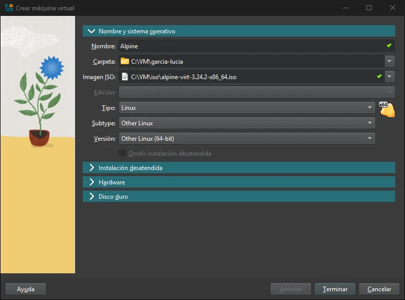
Oracle VirtualBox 7.1 (virtualbox.org) en Windows 11 Pro. Captura: elaboración propia.
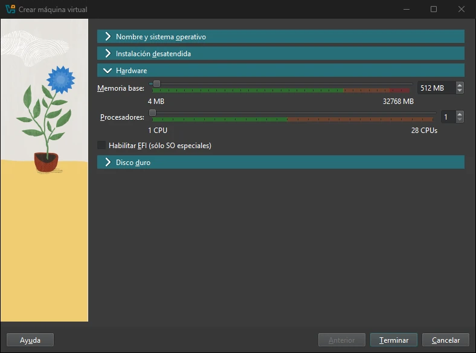
Oracle VirtualBox 7.1 (virtualbox.org) en Windows 11 Pro. Captura: elaboración propia.
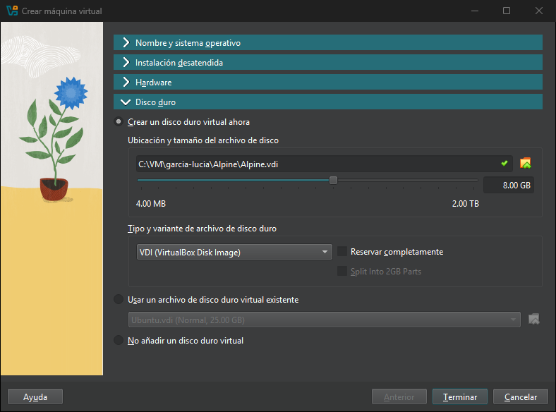
Oracle VirtualBox 7.1 (virtualbox.org) en Windows 11 Pro. Captura: elaboración propia.
Crear y usar
Arrancar, entrar y salir
Qué quiero hacer
VMware Workstation Pro
VirtualBox
Encender
Power on this virtual machine
Iniciar
Meter el teclado y el ratón dentro
Clic dentro o Ctrl + G
Clic dentro
Sacarlos (ratón atrapado)
Ctrl + Alt
Tecla anfitrión: Ctrl derecho
Ctrl + Alt + Supr dentro
Ctrl + Alt + Insert
Tecla anfitrión + Supr
Pantalla completa
Ctrl + Alt + Intro
Tecla anfitrión + F
Apagar bien
Desde el propio sistema invitado, como en un PC. Apagar desde el programa es tirar del cable.
Dejarla como está
Suspender: guarda la memoria en el disco y al volver sigue donde estaba.
Tabla 3.8. Atajos básicos. Con las herramientas de integración instaladas, el ratón entra y sale solo y casi no hacen falta.
Crear y usar · VirtualBox
La ventana de una máquina encendida
1Tecla anfitrión: el Ctrl derecho. Sale abajo a la derecha, en la barra de estado, y libera el ratón y el teclado.
2Ver: pantalla completa (anfitrión + F) y modo escalado (anfitrión + C).
3Dispositivos: la ISO del lector, la red, el USB, las carpetas y el portapapeles compartidos y los complementos del invitado.
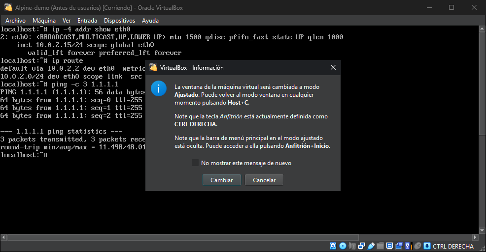
Oracle VirtualBox 7.1 (virtualbox.org) en Windows 11 Pro. Captura: elaboración propia.
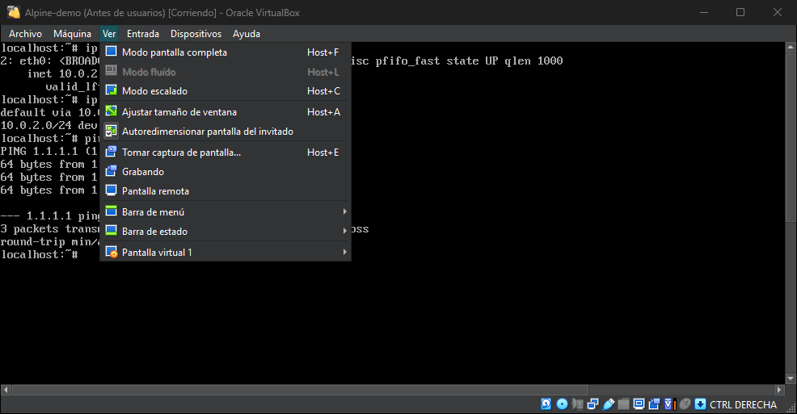
Oracle VirtualBox 7.1 (virtualbox.org) en Windows 11 Pro. Captura: elaboración propia.
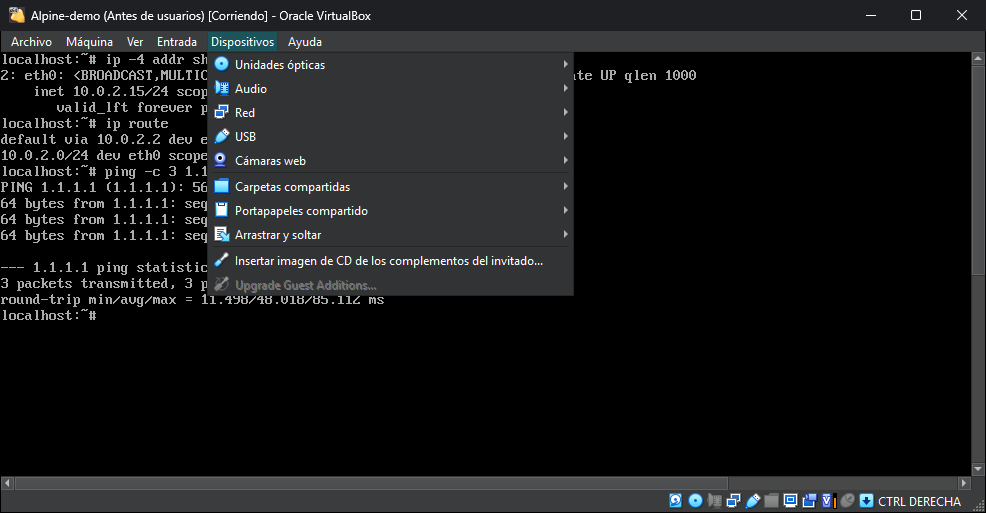
Oracle VirtualBox 7.1 (virtualbox.org) en Windows 11 Pro. Captura: elaboración propia.
Crear y usar · Ubuntu 24.04
Instalar Ubuntu: la instalación típica
1Arrancar desde la ISO y elegir Try or Install Ubuntu.
2Idioma español y teclado español.
3Instalar Ubuntu › instalación interactiva › selección de aplicaciones por defecto.
4Borrar el disco e instalar Ubuntu. Borra el disco virtual de la máquina, no el del PC.
5Tu usuario, el nombre del equipo y la contraseña; zona horaria, Madrid.
6Reiniciar al terminar. Si pide quitar el medio de instalación, Intro: VMware desconecta la ISO.
La instalación personalizada (particiones, convivir con otros sistemas) se ve en la UT4.
Instalar Ubuntu 24.04 LTS✕
¿Cómo quiere instalar Ubuntu?
AtrásSiguiente
Tranquilidad: «el disco» es el archivo de 25 GB de la máquina virtual. El disco de tu PC no se toca.
Maqueta de elaboración propia del paso del disco. Los textos exactos pueden cambiar con la versión puntual de la 24.04.
Crear y usar
Problemas típicos y su arreglo
Síntoma
Causa habitual y arreglo
El ratón se queda atrapado o va a saltos
Faltan las herramientas de integración: Ctrl + Alt para salir y comprobar open-vm-tools o las Guest Additions.
La pantalla es diminuta y no se ajusta
Lo mismo: sin herramientas de integración no hay controlador de vídeo.
Pantalla negra al arrancar Ubuntu
Desactivar la aceleración 3D en la configuración de pantalla.
«VT-x / AMD-V no está disponible»
Virtualización desactivada en la UEFI (3.2): activarla.
Todo lentísimo; tortuga verde en VirtualBox
Windows tiene su hipervisor en marcha (Hyper-V, Integridad de memoria, WSL 2): 3.2.
«No hay espacio en el disco»
Disco del anfitrión lleno: borrar instantáneas o máquinas que sobran.
Las teclas no salen donde deberían
Distribución de teclado del invitado en inglés: ponerla en español dentro del sistema.
Tabla 3.9. Problemas frecuentes. Antes de pedir ayuda: herramientas de integración, virtualización en la UEFI e hipervisor de Windows.
VM › Settings › Options › Shared Folders. En Ubuntu: /mnt/hgfs
Configuración › Carpetas compartidas. En Ubuntu: /media/sf_nombre, grupo vboxsf
Pendrive USB
VM › Removable Devices › Connect
Dispositivos › USB
La red
Según el modo del adaptador: sección 3.8.
Lo compartido es una puerta en el aislamiento. Un pendrive conectado a la máquina deja de verse en el anfitrión, y un virus dentro de la máquina podría llegar a la carpeta compartida.
Concepto clave
Instantánea
snapshot
Copia del estado de la máquina en un momento (el disco y, si está encendida, la memoria) a la que se vuelve en segundos.
No es una copia de seguridad: depende del disco original. Muchas instantáneas ocupan espacio y hacen la máquina más lenta.
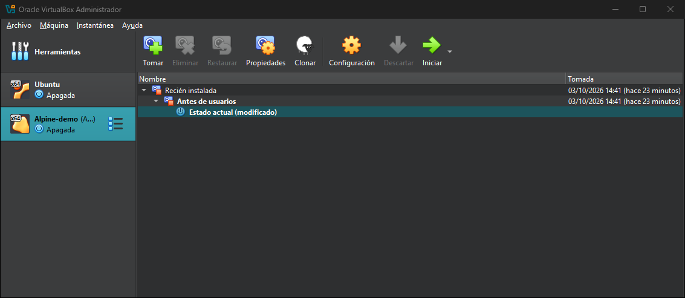
Oracle VirtualBox 7.1 (virtualbox.org) en Windows 11 Pro. Captura: elaboración propia.
Figura 3.13. Árbol de instantáneas de una máquina en VirtualBox. ¿Algo ha salido mal? Se vuelve a «Antes de usuarios» y es como si no hubiera pasado nada. Captura: elaboración propia.
Norma del curso: antes de tocar, instantánea.
Crear y usar
Clonar: completo o enlazado
Clon completo
Una copia independiente de la máquina.
●Ocupa lo mismo que el original.
●Funciona aunque se borre el original.
●Para llevarla a otro equipo o guardarla aparte.
Clon enlazado
Comparte el disco del original a partir de una instantánea.
●Solo guarda las diferencias: ocupa muy poco y se crea en segundos.
●No funciona sin el original.
●Para laboratorios: varias máquinas iguales en el mismo equipo.
Al clonar, la tarjeta de red recibe una MAC nueva; el nombre del equipo dentro del sistema se queda igual (se cambia en la UT5).
Crear y usar · libre y propietario
Exportar e importar: OVF y OVA
Un formato abierto para llevar una máquina a otro programa o a otro equipo. OVF: un archivo que describe la máquina, con sus discos al lado. OVA: lo mismo, empaquetado en un solo archivo.
File › Open › elegir el .ova › nombre y carpeta › Import. Para el camino contrario: File › Export to OVF.
Figura 3.14. Una máquina de VirtualBox llevada a VMware con un archivo OVA. Si VMware avisa de que el archivo no cumple del todo la especificación, se acepta y suele importar bien. Elaboración propia.
Crear y usar · VirtualBox
Clonar y exportar en VirtualBox
1Máquina › Clonar: nombre y carpeta, clon completo o enlazado y Generar nuevas direcciones MAC, para que el clon no repita la del original.
2Archivo › Exportar servicio virtualizado: la máquina, formato Open Virtualization Format y un archivo .ova.
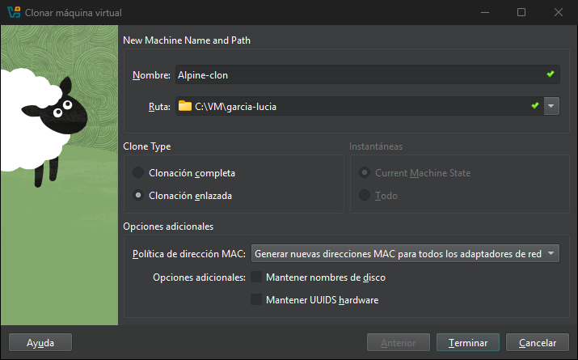
Oracle VirtualBox 7.1 (virtualbox.org) en Windows 11 Pro. Captura: elaboración propia.
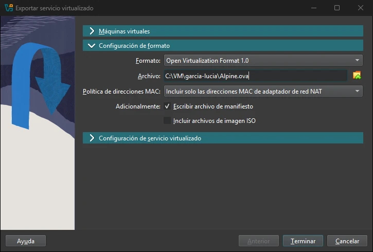
Oracle VirtualBox 7.1 (virtualbox.org) en Windows 11 Pro. Captura: elaboración propia.
Pregunta a la clase
Vas a probar un programa sospechoso en tu máquina virtual. ¿Qué haces antes?
Cuatro pasos
1Instantánea antes de nada.
2Red desconectada (o, como mucho, solo anfitrión): que no pueda conectarse a internet ni a otros equipos.
3Nada compartido: sin carpetas compartidas, sin portapapeles, sin pendrives.
4Al terminar, volver a la instantánea: como si no hubiera pasado nada.
Comprueba lo aprendido
¿Qué ocupa menos espacio en el disco del anfitrión?
Selecciona una opción.
Práctica
Tus máquinas virtuales
Individual, en clase, tres sesiones. Las máquinas se quedan en C:\VM\apellido-nombre para el resto del curso.
1.VMware · Ubuntu: créala sin Easy Install (4 GB, 2 núcleos, 25 GB dinámico) e instala Ubuntu 24.04 LTS con las opciones por defecto.
2.Integración: copia y pega entre los dos sistemas, ajusta la pantalla, usa una carpeta compartida y conecta un pendrive a la máquina.
3.Instantánea «Recién instalada»; cambia el fondo, vuelve a la instantánea y comprueba que el cambio ha desaparecido.
4.Clon enlazado «Ubuntu-clon» a partir de esa instantánea.
5.VMware · Windows 11: créala con TPM (apunta la contraseña), 4 GB y 64 GB dinámico; arranca la ISO hasta la primera pantalla, apaga y haz la instantánea «Antes de instalar».
6.VirtualBox · Alpine: créala con la ISO virt, entra como root y escribe ip a; expórtala a OVA e impórtala en VMware.
Cómo se evalúa
Lista de comprobación de los seis puntos, vista en tu pantalla, y tres preguntas orales. Por ejemplo: ¿qué pasa si borras el Ubuntu original?, ¿dónde está el disco de tu máquina en el anfitrión?, ¿por qué la máquina de Windows pide una contraseña?
Entrega
Nada: se comprueba en tu pantalla
Defensa
Tres preguntas orales
Cubre
Criterios c, d, e y f del RA5
Cuenta
Como práctica, dentro del 40 %
En un PC de 8 GB, una máquina grande encendida cada vez: Ubuntu o Windows 11, nunca las dos.
Redes virtuales
La red de una máquina virtual
●Cada máquina tiene uno o varios adaptadores de red virtuales, cada uno con su dirección MAC (su identificador).
●El hipervisor los enchufa a un conmutador virtual (un switch que solo existe dentro del anfitrión).
●El modo de red decide a qué se conecta: solo a otras máquinas, al anfitrión, a la red del aula o a internet.
●En NAT y en solo anfitrión, el propio programa reparte las IP a las máquinas: hace de servidor DHCP.
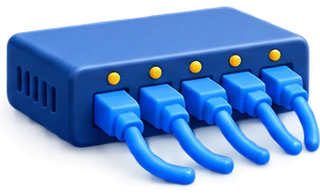
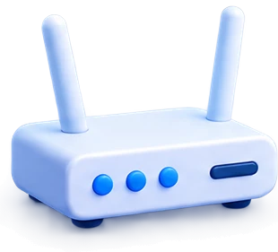
Lo mínimo para comprobarlo
Ubuntu o Alpine · la IP de la máquina
ana@ubuntu:~$ ip a
2: ens33: <BROADCAST,MULTICAST,UP>
inet 192.168.150.130/24
¿Hay camino hasta otra IP?
ana@ubuntu:~$ ping -c 3 192.168.150.1
3 packets transmitted, 3 received, 0% packet loss
Windows · Terminal
C:\> ipconfig
En casa y en el aula, dos equipos están en la misma red si coinciden los tres primeros números de la IP (máscara 255.255.255.0). Lo amplía el módulo de Redes locales.
Redes virtuales · modo 1
NAT
El anfitrión hace de router: las máquinas están en una red privada que solo existe dentro de él y salen a internet con su IP.
✓ Internet · ✓ anfitrión · ✓ otras máquinas en NAT
✕ Los demás PC del aula no llegan a la máquina.
VMware: NAT (VMnet8). Es el modo por defecto.
Figura 3.17. Modo NAT. Las IP son de ejemplo. Elaboración propia.
Redes virtuales · modo 2
Adaptador puente
La máquina se conecta a la red física como un equipo más, como si tuviera su propio cable al switch: el router le da una IP de la red del aula.
✓ Internet · ✓ anfitrión · ✓ otras máquinas · ✓ todo el aula
! En wifi o en redes de centros con control de equipos puede no funcionar o no estar permitido.
Host-only (VMnet1) · Adaptador solo anfitrión · conmutador interno
Segmento LAN
✕
✕
✓
✕
LAN segment · Red interna · conmutador privado
Sin red
✕
✕
✕
✕
Adaptador desconectado · No conectado
* La trampa de VirtualBox. Su modo «NAT» pone a cada máquina sola en su red, todas con la IP 10.0.2.15, y no se ven entre ellas. Para que se vean y tengan internet está la Red NAT. En VMware, las máquinas en NAT sí se ven.
Tabla 3.10. Conexiones de cada modo de red y su nombre en cada programa. «Anfitrión» quiere decir que la máquina y el anfitrión se comunican en los dos sentidos.
Redes virtuales · VirtualBox
El modo de red en VirtualBox
1Configuración › Red › Adaptador 1 › Conectado a: NAT, Adaptador puente, Red interna, Adaptador sólo anfitrión, Red NAT…
2Dentro de la máquina, ip a, ip route y ping: en NAT, la IP 10.0.2.15, la puerta de enlace 10.0.2.2 y salida a internet.
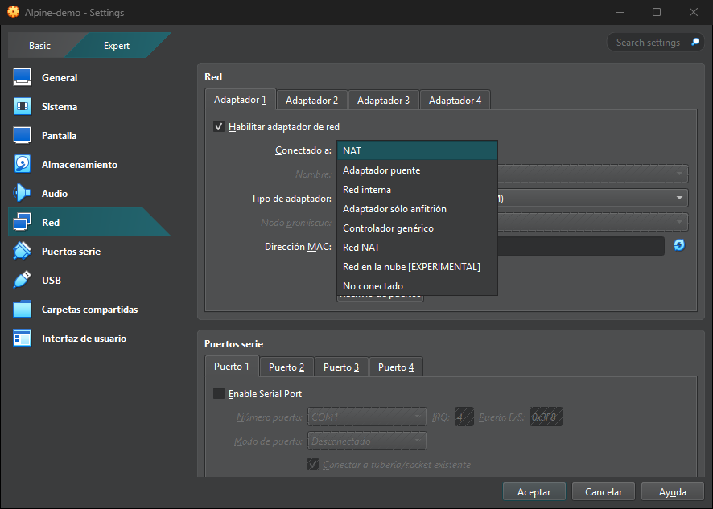
Oracle VirtualBox 7.1 (virtualbox.org) en Windows 11 Pro. Captura: elaboración propia.
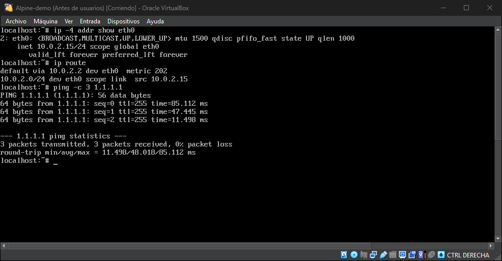
Oracle VirtualBox 7.1 (virtualbox.org) en Windows 11 Pro. Captura: elaboración propia.
Redes virtuales · relación con el anfitrión
Las redes vistas desde el anfitrión
C:\> ipconfig
Adaptador de Ethernet Ethernet:
Dirección IPv4. . . : 192.168.1.25
Adaptador de Ethernet VMware Network Adapter VMnet1:
Dirección IPv4. . . : 192.168.80.1
Adaptador de Ethernet VMware Network Adapter VMnet8:
Dirección IPv4. . . : 192.168.150.1
Adaptador de Ethernet VirtualBox Host-Only Network:
Dirección IPv4. . . : 192.168.56.1
Maqueta de elaboración propia de la salida de ipconfig, recortada. Las IP de VMnet1 y VMnet8 cambian de un equipo a otro.
Adaptadores nuevos en Windows
El anfitrión tiene una pata en cada red virtual en la que participa: VMnet1 (solo anfitrión), VMnet8 (NAT) y el de VirtualBox. Por eso se comunica con las máquinas.
Editor de red virtual
VMware: Edit › Virtual Network Editor, como administrador. Cambia las subredes y el DHCP de cada VMnet.
El cortafuegos de Windows no contesta al ping. Si la máquina no recibe respuesta del anfitrión, puede que la red esté bien: prueba al revés, del anfitrión a la máquina.
Ejercicio interactivo
¿Qué modo de red?
Tres formas de practicar: elegir el modo para un caso, decir quién ve a quién en cada modo y deducir el modo a partir de la IP de la máquina.
Usa la tabla de quién ve a quién. Pista y Resolver ponen la racha a cero.
Pregunta a la clase
Quiero montar una web en mi máquina virtual y que la vea toda la clase. ¿Qué modo?
Depende de quién la tiene que ver
Toda la clase → puente.La máquina tiene IP del aula y cualquiera llega a ella.
Toda la clase, pero el centro no deja equipos nuevos → NAT con reenvío de puertos.Lo que llega a un puerto del anfitrión se pasa a la máquina.
Solo yo, desde mi Windows → solo anfitrión.Nadie más la ve y no tiene salida.
Comprueba lo aprendido
Dos máquinas virtuales deben verse entre ellas, sin internet y sin el anfitrión. ¿Qué modo?
Selecciona una opción.
Práctica
Laboratorio de redes virtuales
En parejas, en clase, dos sesiones. Dos máquinas Alpine (256-512 MB cada una) y el anfitrión.
1.Antes de probar, rellena la predicción: quién ve a quién en NAT, solo anfitrión, segmento LAN y, si la red lo permite, puente.
2.En cada modo: IP de cada máquina (ip a), IP del anfitrión (ipconfig) y ping entre máquinas, al anfitrión, desde el anfitrión y a internet.
3.En VirtualBox: dos Alpine en NAT (las dos con 10.0.2.15: no se ven) y luego en Red NAT (se ven).
4.Explica por escrito cada resultado que no coincida con tu predicción.
Alpine · pedir IP por DHCP
localhost:~# ip link set eth0 up
localhost:~# udhcpc -i eth0
Segmento LAN · IP a mano
localhost:~# ip addr add 10.0.0.1/24 dev eth0
Probar
localhost:~# ping -c 3 10.0.0.2
Entrega
Tabla de predicción y resultado
Defensa
«¿Por qué no responde este ping?»
Cubre
Criterios e y f del RA5
Cuenta
Como práctica, dentro del 40 %
Alpine arranca con teclado de Estados Unidos: el guion (-) está en la tecla del apóstrofo.
Rendimiento
Lo que cuesta una máquina virtual
Procesador
Casi a velocidad real gracias a VT-x y AMD-V.
Pierde poco
Memoria
La asignada queda reservada para la máquina mientras está encendida.
Se reparte
Disco
Un archivo dentro del disco del anfitrión. Con un disco mecánico se nota mucho.
Pierde bastante
Gráficos
Tarjeta gráfica imitada: los juegos y el 3D van muy por debajo.
Es lo que más pierde
Para el anfitrión, la máquina entera es un proceso: vmware-vmx.exe en VMware y VirtualBoxVM.exe en VirtualBox. Se ve en el Administrador de tareas como cualquier otro programa.
Rendimiento
Medir: pruebas de rendimiento
Una prueba de rendimiento (benchmark) es la misma tarea, en las mismas condiciones, para comparar números. Las de esta unidad:
●Speedometer (browserbench.org): mide el navegador; sirve fuera y dentro sin instalar nada.
●Discos de Ubuntu: «Probar el rendimiento del disco», lectura y escritura del disco virtual.
●7-Zip, opcional: trae su propia prueba de compresión, en Windows y en Linux.
El método
1 Cerrar todo lo demás, fuera y dentro.
2 Repetir tres veces y hacer la media.
3 Cambiar una sola cosa cada vez (núcleos o memoria).
4 Comparar en porcentaje: máquina virtual ÷ anfitrión × 100.
Rendimiento · actividad del sistema
Observar la actividad
●En el anfitrión: Administrador de tareas (CPU, memoria y disco del proceso de la máquina) y Monitor de recursos.
●En el invitado: el Monitor del sistema de Ubuntu (o el Administrador de tareas de Windows).
●Las dos a la vez: si la máquina tiene 2 núcleos al 100 % en un anfitrión de 8 hilos, el anfitrión marca un 25 % (2 de 8).
Maqueta de elaboración propia: una máquina con 4 GB y 2 núcleos al 100 % en un anfitrión de 8 hilos. Las cifras son de ejemplo.
Pregunta a la clase
Si le doy 8 núcleos y 12 GB a la máquina, ¿irá el doble de rápido?
El anfitrión tiene 8 hilos y 16 GB.
No: van peor los dos
✕8 núcleos de 8 hilos: el anfitrión se queda sin procesador para él y para el propio VMware.
✕12 GB de 16: a Windows le quedan 4 GB justos; en cuanto abra algo, tira del archivo de paginación (UT2) y todo se arrastra.
✓Con las reglas de reparto: como mucho 4 núcleos y 12 GB solo si no hay nada más encendido.
Más recursos ayudan hasta un punto; después, estorban. Por eso se mide (práctica 3.11).
Comprueba lo aprendido
¿Cómo se llama en el anfitrión el proceso de una máquina de VMware?
Selecciona una opción.
Práctica
Pruebas de rendimiento
Individual, en clase, una sesión, con tu máquina Ubuntu de la práctica 3.7.
1.Speedometer en el anfitrión: tres pasadas y la media.
2.Speedometer en Firefox, dentro de Ubuntu, con 2 núcleos y 4 GB: tres pasadas y la media. Mientras corre, anota la CPU y la memoria de vmware-vmx.exe y lo que marca el Monitor del sistema.
3.Repite con 1 núcleo y la misma memoria, y luego con 2 núcleos y 2 GB.
4.Discos de Ubuntu: prueba de rendimiento del disco virtual.
5.Ficha: los números, el porcentaje del anfitrión que consigue la máquina y dos líneas de conclusión.
Ejemplo de conclusión
«Con 2 núcleos la máquina saca el 78 % del anfitrión y con 1 núcleo, el 52 %. Bajar la memoria a 2 GB casi no cambia Speedometer, pero el escritorio se nota más lento.» (Números de ejemplo.)
Entrega
La ficha, en clase
Los números
Los de tu equipo
Cubre
Criterios g y f del RA5
Cuenta
Como práctica, dentro del 40 %
Práctica
Test masivo en clase
Un test de toda la unidad en takataka.io. El banco de preguntas es grande y cada alumno recibe un subconjunto distinto, al azar: no hay dos tests iguales.
Obliga a haber leído la unidad entera, no solo lo que se hace con VMware, y a saber buscar rápido en las diapositivas.
Cubre sobre todo la teoría: máquina real y virtual, ventajas e inconvenientes, software libre y propietario, configuración y relación con el anfitrión (criterios a, b, c, e y f del RA5).
Práctica
Examen de la unidad
Es el 60 % de la nota de la unidad. Dos partes en la misma sesión. La fecha se anuncia en clase con al menos una semana.
Parte de teoría
Test y preguntas cortas de las secciones 3.1 a 3.10, en papel.
●Máquina real y virtual, anfitrión e invitado, usos, ventajas e inconvenientes.
●Hipervisores de tipo 1 y 2, VT-x, el hipervisor de Windows; programas y licencias.
●Hardware virtual, reparto de recursos, discos y archivos; instantáneas, clones y OVA.
●Modos de red y quién ve a quién; rendimiento y actividad.
Criterios a, b, c, e, f y g del RA5.
Parte práctica
En VMware, en tu PC, con una ficha de máquina generada por semilla, la misma para toda la clase:
1Crear la máquina con la memoria, los núcleos, el disco y la red de la ficha.
2Instantánea con el nombre de la ficha y clon enlazado.
3Arrancar y comprobar la red (ip a, ping) o el instalador.
✗Sin apuntes, sin internet salvo lo que pida la ficha.
✓El profesor lo comprueba en tu pantalla.
Criterios d y e del RA5.
Antes del examen
Cómo practicar para el examen
Lo que se trae hecho de casa: racha de diez en cada ejercicio interactivo y la hoja por semilla hecha en papel y comprobada con el solucionario.
Para la parte práctica
Si tienes ordenador en casa, instala VMware (es gratis) y repite: crear una máquina con una ficha de la hoja, instantánea, clon enlazado y cambiar el modo de red.
Sin material en el examen. La tabla de quién ve a quién y las reglas de reparto de recursos hay que saberlas.
Los ejercicios interactivos (pulsa para ir a cada uno)
Una máquina virtual es software que imita un ordenador completo. El anfitrión es el sistema del equipo real; los invitados, los de dentro de las máquinas.
05
VMware Workstation Pro: propietario y gratuito desde 2024. VirtualBox: libre (GPLv3), con un Extension Pack propietario. Hyper-V: incluido en Windows Pro. Gratis no es libre.
02
Ventajas: aislamiento, instantáneas, varios sistemas sin particionar, portabilidad, ahorro. Inconvenientes: rinde menos, quita recursos, si cae el anfitrión caen todas, licencias, disco.
06
Herramientas de integración (VMware Tools, Guest Additions) dentro del invitado: ratón, pantalla, portapapeles, carpetas compartidas. Sin ellas, el ratón se queda atrapado.
03
El hipervisor reparte el hardware. Tipo 1 sobre el hardware (ESXi, Hyper-V, Proxmox); tipo 2 sobre un sistema (VMware Workstation, VirtualBox). Emular es imitar otro procesador.
07
Disco: VMDK (VMware), VDI (VirtualBox), VHDX (Hyper-V), QCOW2 (QEMU). Dinámico ocupa lo escrito; fijo, todo. Una máquina son archivos: .vmx, .vmdk, .nvram, .vmsn.
04
Hace falta VT-x o AMD-V activado en la UEFI. Si Windows tiene su hipervisor en marcha (Hyper-V, Integridad de memoria), VMware y VirtualBox van por encima de él y más lentos.
08
Reparto: 4 GB como mínimo para el anfitrión con Windows 11 y como mucho la mitad de los hilos por máquina. La memoria y los núcleos se cambian con la máquina apagada.
Unidad 3
Resumen (2 de 2): crear, conectar y medir
09
Crear: sin instalación automática (Easy Install o desatendida), con la ISO en el CD/DVD. Ctrl + G y Ctrl + Alt en VMware; Ctrl derecho en VirtualBox. Apagar desde el invitado.
13
Puente: un equipo más de la red física, lo ve todo el aula. Solo anfitrión: red privada con el anfitrión, sin internet. Segmento LAN: solo las máquinas, IP a mano.
10
Instantánea: volver atrás en segundos; no es copia de seguridad. Antes de tocar, instantánea. Clon completo: independiente. Clon enlazado: ocupa poco, necesita el original.
14
El anfitrión tiene adaptadores en las redes virtuales (VMnet1, VMnet8). En VirtualBox, el NAT aísla cada máquina (10.0.2.15); para que se vean, Red NAT. El cortafuegos de Windows no contesta al ping.
11
OVF y OVA: formato abierto para exportar e importar entre programas. Compartir (portapapeles, carpetas, USB) abre puertas en el aislamiento.
15
Coste: el procesador pierde poco; el disco y los gráficos, mucho. La máquina es un proceso del anfitrión: vmware-vmx.exe o VirtualBoxVM.exe.
12
Cada adaptador se conecta a un conmutador virtual según su modo. NAT: el anfitrión hace de router; internet sí, el aula no llega a la máquina. Es el modo por defecto.
16
Medir: la misma prueba, tres veces, cambiando una cosa cada vez, y comparar en porcentaje con el anfitrión. Más recursos ayudan hasta un punto; después, estorban.
Para ampliar
Recursos de la unidad
La documentación de los programas, las imágenes de instalación oficiales y las pruebas de rendimiento. Descarga siempre de la página oficial.
VMware Workstation ProDocumentación en Broadcom TechDocs (Using VMware Workstation Pro); descarga en el portal de soporte de Broadcom, con cuenta.
VirtualBoxvirtualbox.org: descargas, manual de usuario y lista de cambios de cada versión.
Hyper-VDocumentación de Hyper-V y del Espacio aislado de Windows en Microsoft Learn.
Imágenes ISOubuntu.com (24.04 LTS), la página de descarga de Windows 11 de Microsoft y alpinelinux.org (versión virt).
Esta unidadLos cuatro ejercicios interactivos y la hoja por semilla (hoja.html), con la ficha del examen práctico. Ctrl + P guarda las diapositivas en PDF.
Fin de la unidad 3
Dudas y preguntas
Seis fechas que se anuncian en clase: las cuatro prácticas con VMware, el test masivo y el examen. Tus máquinas se quedan en el aula para el resto del curso.